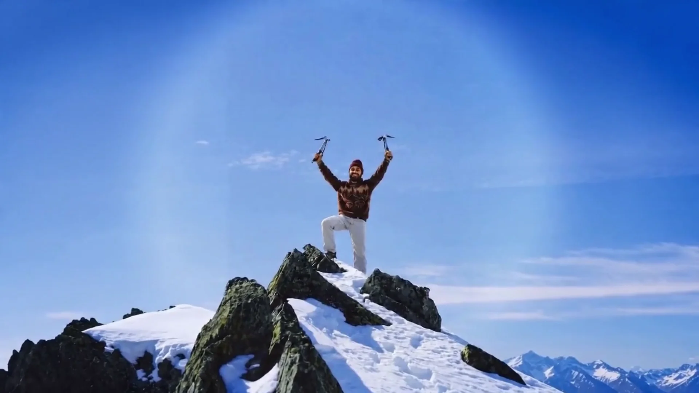

Passion Projects
SyncEd
AI course-content sync platform (hackathon build: scraping → embeddings → similarity scoring → LLM insights)
BrainBytes
Adaptive learning platform turning course material into short interactive "bytes" with embedded quizzes
Campus Geo Challenge
Campus geography guessing game
GitHub
More on GitHub
The Trail Down
-
Process Intelligence & AI Engineer Intern
Robot.com · May 2026–Present · SF / Medellín
Building AI-powered automation systems and backend infrastructure — LLM integrations, intelligent data pipelines, real-time sync.
-
ML / Software Engineer
Graft Systems · Jan 2026–Present · Ann Arbor / SF
Random Forest model on RGB + depth imagery for grape cluster weight → vineyard yield forecasting. Built full-stack model inference and live visualization. Helped secure $25K non-dilutive funding (America250 pitch competition, Draper University incubator).
-
CEO Shadow
Havenpark Communities · Dec 2025 · Salt Lake City
Acquisition analysis, market trends, and financial viability work with direct CEO-level strategy exposure.
-
Software Engineer & Business Analyst
AI Hackathons · Ann Arbor
Architected full-stack AI apps (SyncEd, BrainBytes). Market analysis, go-to-market strategy, and pricing.
-
Education
University of Michigan
BSE Computer Science, Business minor · GPA 3.81 · Dean’s List
Cairns
Stones stacked along the trail — marks left to guide the next climber.
Second Serve Club
President · 2021–2025 · Houston
Grew membership 30% and mobilized $5K+ in donated tennis equipment. Partnered with UH Adaptive Athletics to open the court to athletes with disabilities, and built a volunteer tracking system that kept it all running.
Coding Club
Founder & Instructor · 2023–2025
Founded a student-led club teaching Python, Java, and AI fundamentals to 40+ members. Designed 25+ coding challenges, mentored beginners in Git and debugging, and ran workshops that sent teams to regional STEM showcases.
Small Support
President & Co-Founder · Nonprofit · Mexico
Co-founded a nonprofit bringing mentorship and school supplies to underserved children in Mexico — recruiting and coordinating volunteers to distribute 1,000+ clothing and school items, with evaluation metrics to track the impact.
Skills
Etched into the rock face.
- Machine Learning
- Entrepreneurship
- System Architecture
- Python
- AI / LLMs
- Full-Stack Development
- Collaborative Problem Solving
- Data / Analytics
Passions
Painted into the hollow. Hover or tap a mark to read it.